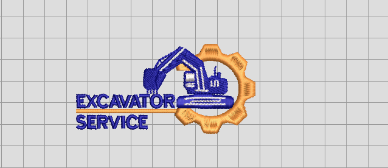

Free embroidery designs are a godsend for creators on a budget! This selection of six professional-grade DST files is completely free and ideal for technical practice or custom gift making.
一、Floral Elegance (3 designs)
1. Vintage Rose

Classic roses paired with exquisite leaf patterns, perfectly suited for hat brims and handbags.
Dimensions： 9×6.5 cm | Stitch Count： 17,300 Stitches
Embroidery design files (Download Vintage_Rose .dst) - Embroidery machine special format
2. Minimalist wildflowers

Exquisite wildflower design,Simple lines outline flowers, and the embroidery craftsmanship is exquisite, suitable for decorating clothing, fabrics, and other items.
Dimensions： 8.8×8.8 cm | Stitch Count： 6,504 Stitches
[Embroidery design files (Download Flower 69.DST)](/files/flower 69.dst) - Embroidery machine special format
3. geometric plants
Modern abstract floral patterns paired with clean lines make for the perfect choice in tech-inspired apparel.Dimensions： 6×2.1 cm | **Stitch Count：**832 Stitches
Embroidery design files ( Download Geometric Plants.DST) - Embroidery machine special format
二、Summer Limited Edition Series (2 designs)
4. swimming armband
Circular design with swimming patterns and text areas, suitable for embroidery on team uniforms and other decorations for swimming club teams.
Dimensions： 7.08×7.08 cm | Stitch Count： 12,063 Stitches
Embroidery design files (Download Swimming Armband.DST) - Embroidery machine special format
5. Hi Sydney
Includes elements such as the Sydney Opera House and Sydney Harbour Bridge.
Dimensions： 24.53×16.94 cm | Stitch Count： 12,856 Stitches
Embroidery design files (Download Hi.DST) - Embroidery machine special format
三、LOGO Private Customization（Free gift）
6. Private Customization
private design
Dimensions： 8.32×4.13 cm | Stitch Count： 4,553 Stitches
Embroidery design files (Download Private Customization.DST) - Embroidery machine special format
üßµ The joy of sharing lies in knowing that these designs may be inspiring new creative ideas in some corner of the world. The doors here are always open to all embroidery enthusiasts‚Äîwhether you’re just beginning to explore the magic of needlework or already a master of the craft, your voice and your work are invaluable! I‚Äôm super excited to see the results of your creations using these patterns in the comments section, hear your insights, or discover the amazing shares you bring! Let‚Äôs connect through needlework, grow together through exchange and collaboration, and embroider the endless possibilities that belong to us! See you next time! Free embroidery designs are a blessing for creators on a tight budget! This selection features 6 DST files completely free of charge, perfect for technical practice or custom gift-making.